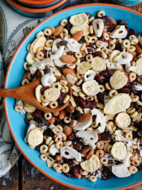

Cereal Fruit Mix

Descripción
Es uno de los mejores desayunos del mundo, nutritivo, con frutas y llena de
elementos esenciales para nuestro inicio de días: proteina y carbohidratos.
Ingredientes
- Banano
- Manzana
- Cereal con semillas
- Kumis / Yogurt Natural
Pasos
- Cortar cada una de las frutas en rodajas o cubos
- Añadir a un bowl las frutas cortadas
- Añadir cereal y yogurt